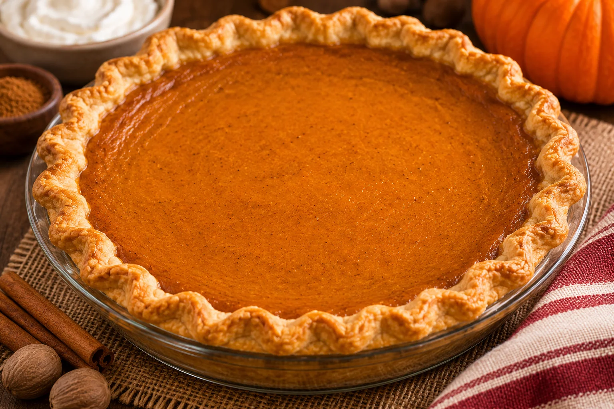
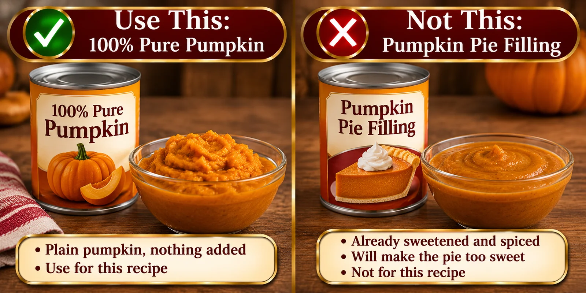
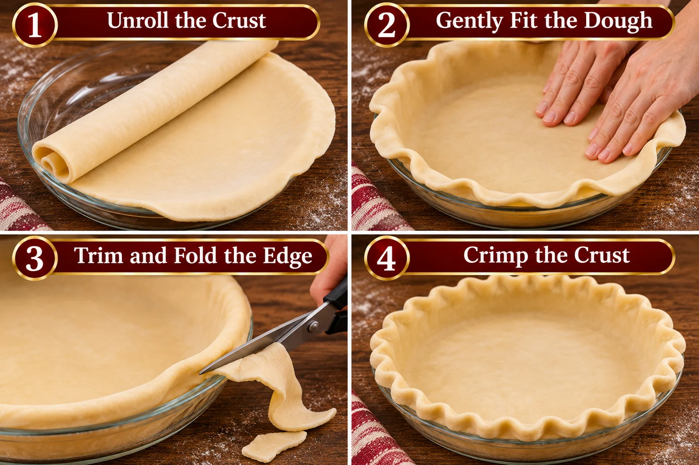
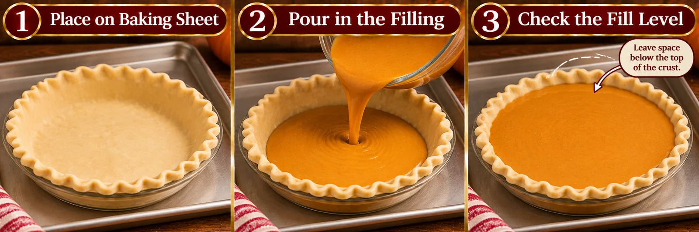
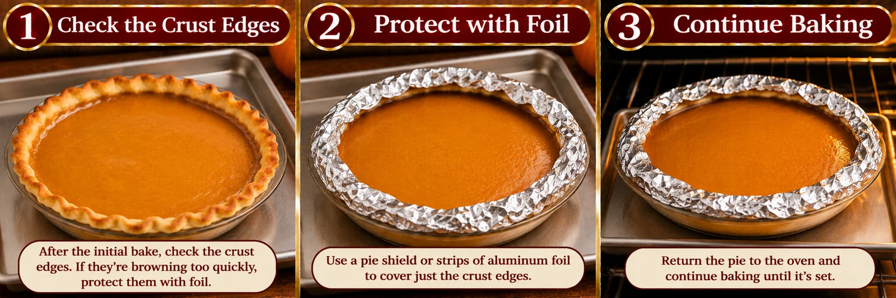
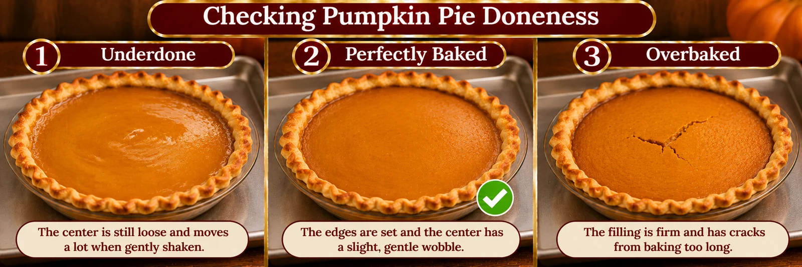
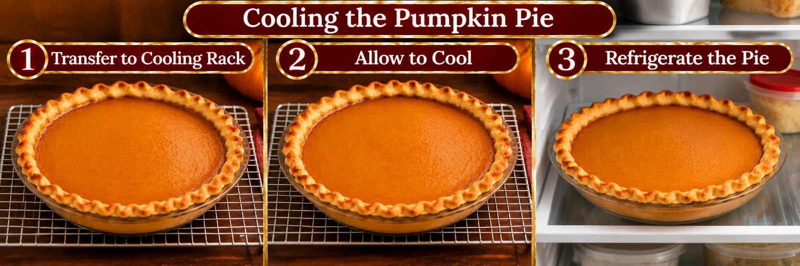

Classic Homemade Pumpkin Pie
Smooth, gently spiced pumpkin custard in a golden, flaky crust.
Difficulty: Beginner • Total time: About 65–85 minutes baking and prep, plus cooling and chilling
Equipment: 9-inch pie dish, mixing bowl, whisk, measuring cups and spoons, baking sheet.

Ingredients
| Ingredient | Amount |
|---|---|
| Refrigerated pie crust | 1 crust for a 9-inch pie |
| 100% pure canned pumpkin | 1 can (15 oz) |
| Evaporated milk | 1 can (12 fl oz) |
| Large eggs | 2 |
| Granulated sugar | ¾ cup |
| Ground cinnamon | 1½ tsp |
| Ground ginger | ½ tsp |
| Ground nutmeg | ¼ tsp |
| Ground cloves | ⅛ tsp |
| Fine sea salt | ½ tsp |
Evaporated milk is unsweetened canned milk, not sweetened condensed milk. Homemade pumpkin purée can be substituted at approximately 1¾ cups if thick and well drained, but its variable moisture may change the baking result.
Before You Start and Equipment

Use 100% pure canned pumpkin, not pre-sweetened pumpkin pie filling. A refrigerated 9-inch crust keeps this recipe approachable. The filling should have set edges and a small, gentle wobble in the center when finished. Do not leave the baked pie at room temperature longer than 2 hours; refrigerate promptly.
Step-by-Step Instructions
1. Prepare the crust and oven

Place a rack in the lower third of the oven and preheat to 425°F. Let 1 refrigerated pie crust reach the workable temperature specified on its package. Unroll it into a 9-inch pie dish, gently press into the bottom and sides without stretching, trim to about ½ inch overhang, then fold and crimp the edge. This recipe uses an unbaked crust unless its package instructs otherwise.
2. Mix pumpkin, sugar, and spices
Make it your own: Optional: replace the individual spices with about 2½ teaspoons pumpkin pie spice, adjusting to taste because blends vary. Add 1 teaspoon vanilla extract here if desired.
In a large bowl, whisk together 1 can (15 oz) pure pumpkin, ¾ cup sugar, 1½ tsp cinnamon, ½ tsp ginger, ¼ tsp nutmeg, ⅛ tsp cloves, and ½ tsp fine sea salt until evenly mixed. For a less sweet pie, use ⅔ cup sugar. If using pumpkin pie spice, replace the four spices with about 2½ tsp of the blend.
3. Add the eggs
Lightly beat 2 large eggs in a separate bowl, then whisk them gently into the pumpkin mixture. Avoid vigorous beating, which adds excess air.
4. Add the milk
Gradually whisk in 1 can (12 fl oz) evaporated milk until smooth and pourable. For a richer variation, replace it with 1½ cups heavy cream; baking behavior may differ. If desired, add 1 tsp vanilla extract now. Do not substitute sweetened condensed milk without adjusting the recipe.
5. Fill the pie

Set the prepared pie dish on a sturdy, preferably light-colored metal baking sheet. Pour in the filling, stopping below the top edge of the crust to prevent spills. A shallow pie shell may not hold every drop.
6. Start baking

Bake on the lower oven rack at 425°F for 15 minutes. If the crust edges brown too quickly, shield them carefully with a pie shield or strips of foil.
7. Lower the heat and check doneness

Without removing the pie, lower the oven to 350°F and bake another 35–50 minutes. Start checking toward the early end. The edges should look set and the center should wobble gently in a small area, not ripple like liquid. If still liquid, bake 5 minutes more and recheck. A thermometer reading around 175–180°F at the center can be an additional texture check, but do not rely on that alone. Small cracks are not a failure; large cracks may mean overbaking.
8. Cool safely

Transfer the pie to a wire rack. Allow it to cool at room temperature for up to 2 hours, then refrigerate. The custard firms as it cools, so do not slice it immediately. Never leave an egg-and-milk pie on the counter overnight.
9. Chill, slice, and serve
Make it your own: Optional: top each slice with whipped cream and a light sprinkle of cinnamon when serving.
Chill about 1–2 hours for firmer slices, or prepare the pie a day ahead. Cover after it has chilled. Cut into 8 slices with a sharp knife, wiping the blade between cuts for neater edges. Serve chilled or allow an individual slice to stand briefly before eating. Add whipped cream if desired.
Troubleshooting
Runny center: Bake until edges are set and center wobbles gently; cool and chill before slicing.
Cracked filling: Usually overbaked; check earlier next time.
Soggy crust: Try a lower oven rack and avoid overfilling.
Dark crust edges: Protect edges with foil or a pie shield.
Bubbles on top: Whisk gently instead of beating vigorously.
Make-Ahead, Holding, Storage, and Reheating
Bake the day before or up to two days ahead, cool safely, and refrigerate covered at 40°F or below. Refrigerate leftovers within 2 hours and use within 3–4 days. To freeze, chill first, wrap securely, and freeze for best quality about 1–2 months; thaw overnight in the refrigerator. Freezing may slightly change the texture.